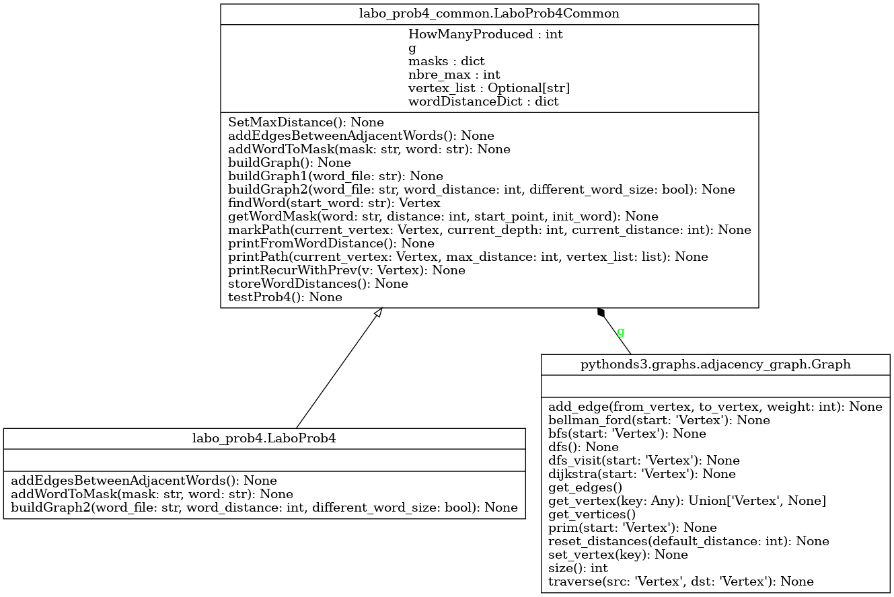

Module labo_prob4
Diagramme de classe
{kind=link}
Code du module
Code pour explorer le quatrième exercice du laboratoire - APP du cours GIF270
- L’exercice 4 touche les graphes et les éléments suivants :
Redéfinition de la création du graphe de proximité aux propriétés étendues
Redéfinition de l’ajout d’arcs entre les mots (noeuds) qui ne diffèrent que par le nombre donné de lettres
Redéfinition de l’ajout de mots aux masques dérivés
- Note :
Le traitement des arguments a été inclus dans la classe ParsingClass4, qui est utilisée dans le code principal
Tous les arguments requis sont présents et accessibles dans ParsingClass4.args
Le traitement du mode verbose vous donne un exemple de l’utilisation des arguments
Tests à effectuer avec le fichier fourni pour le laboratoire (mots-francais-sans-accent.txt) :
Utiliser « barre » comme mot de départ et une distance de 29.
- Utiliser les paramètres de ligne de commande suivants :
-f mots-francais-sans-accent.txt -m barre -d 29
On observe alors un chemin entre « barre » et « eclat », qui est :
(barre marre maire faire frire frere frene arene amene amere avere avare avale ovale orale orage otage etage etaie etais epais epris ecris ecrus echus echos eclos eclot eclat)
- Utiliser « barre » comme mot de départ, en permettant des mots de tailles différentes,
et avec une distance de 29.
- Utiliser les paramètres de ligne de commande suivants :
-f mots-francais-sans-accent.txt -m barre -d 29 -D
On observe alors un chemin entre « barre » et « debrayait », qui est :
(barre marre maree mare pare paie paien paient raient iraient riraient friraient frisaient faisaient taisaient tassaient passaient pansaient pensaient pendaient rendaient reniaient deniaient defiaient defraient defrayent defrayant defrayait debrayait)
- Utiliser « barre » comme mot de départ, en permettant une différence de 2 caractères entre les mots,
et avec une distance de 29.
- Utiliser les paramètres de ligne de commande suivants :
-f mots-francais-sans-accent.txt -m barre -d 29 -wd 2
Copyright 2018-2025, Frédéric Mailhot et Université de Sherbrooke
- class labo_prob4.LaboProb4[source]
Bases :
LaboProb4CommonClasse à utiliser pour le quatrième exercice de laboratoire :
Contient le code pour créer le graphe de mots, tel qu’il apparaît dans le livre de référence
- Initialisation d’une nouvelle instance de LaboProb4 :
Utilise l’initialisation de la classe héritée par LaboProb4 (ParsingClass4)
- Returns :
(void) : Au retour, l’objet est initialisé
- addEdgesBetweenAdjacentWords() None[source]
Refactorisation du code tiré de la section 8.8, pour partager l’ajout d’arcs entre buildGraph et buildGraph2
- Args :
(void) : Les champs suivants sont utilisés, étant directement disponibles dans l’objet self
g (Graph) : Graphe contenant les noeuds à traiter masks (dict) : Dictionnaire des clés utilisées (masques, par exemple : « _abc », « _bc », etc.)
- Returns :
(void) : Les arcs sont ajoutés directement dans le graphe
- addWordToMask(mask: str, word: str) None[source]
Refactorisation du code tiré de la section 8.8, pour partager l’ajout de mots dans les masques
Args :
mask (str) : Masque auquel ajouter un mot qui a produit ce masque word (str) : Mot à l’origine du masque
- Returns :
(void) : Le mot est ajouté au masque, dans le dictionnaire
- buildGraph2(word_file: str, word_distance: int, different_word_size: bool) None[source]
Création du graphe modifié de connectivité entre les mots
- Modification du code de la fonction buildGraph1() :
- ajouter un arc entre des mots qui ne sont pas de la même longueur,
mais qui ne diffèrent que par une lettre
ajouter un arc entre des mots qui diffèrent par 2, 3, … lettres
Doit produire un graphe où les noeuds représentent des mots et les arcs lient des mots qui ne diffèrent entre eux que du nombre de caractères demandé
- Args :
wordFile (str) : Nom du fichier de mots à étudier wordDistance (int) : Nombre maximum de caractères différents permis entre 2 mots adjacents dans l’échelle different_word_size (bool) : Indique qu’on permet (ou non) des mots de tailles différentes
- Returns :
- (void)Au retour, l’objet contient le nouveau graphe tous les mots,
avec des arcs entre les mots qui sont liés
- labo_prob4.main() None[source]
- Démarrage de l’exercice 4 du labo :
Crée une instance de la classe LaboProb4, utilisée pour créer le graphe de mots
Crée le graphe de proximité à l’aide de la liste de mots
- Effectue le test du code :
Trouve le mot passé en paramètre
Suit les chemins possibles à partir du mot de départ
Imprime la liste de mots adjacents à partir du mot de départ
La méthode main() est déjà fonctionnelle et ne doit pas être modifiée
- Returns :
(void) : Au retour, l’exécution est terminée
Note
Documentation créée le 20 févr. 2025.